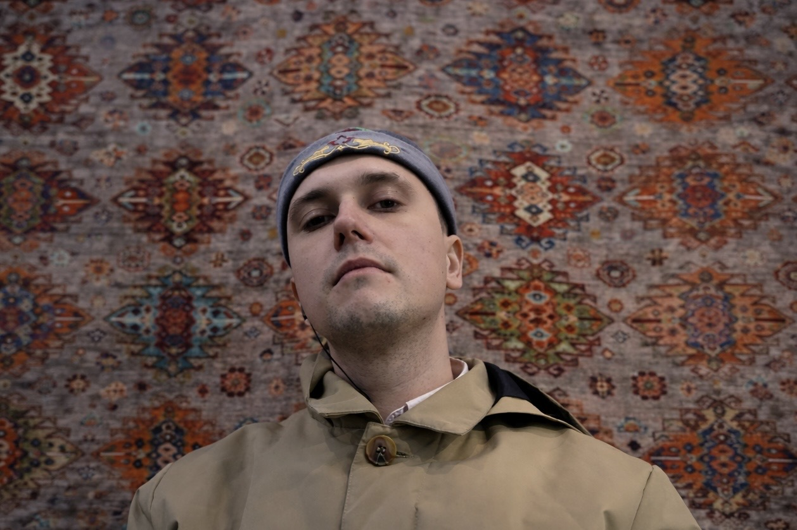

Artist Page
SOBIVAN
нонкомформизм и рэп

Альт-рок с элементами рэпа и уличной энергетикой. SOBIVAN пишет песни так, будто они рождаются прямо здесь и сейчас.
Афиша
Ближайшие концерты
Этот блок я сделал редактируемым под реальные даты, города, площадки и концертные постеры. Пока внутри стоят демонстрационные карточки, чтобы было видно композицию и принцип подачи.

Популярные треки